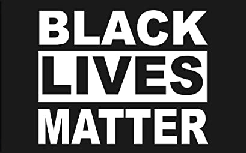

ecn World Wide
Wecn Downloads Page



Rainbow Gum JSRF texture edit

Wecn Lost Media Pack: Global Revolution Edition (12GB)
Contains:
- Remaining speedruns of JSRF and EEETME from wecn Era 1 (Late 2015-2016), including ILs and split files.
- All wecn images, media, etc, including some unreleased content.
- The old wecn.tk files (don't use .tk, they are scammers). That is to say, the first revision of this website.
- All of the original Yahoo remixes, and their production files, midis, and the yahoo soundfont.
- Ed, Edd, n' Eddy: The Mis-Edventures PC game. Midway games is out of business, and you can no longer legally acquire the game. You can opt out of downloading it in the torrent.
- JSRF Wecn Modpack: Classic - All of my old texture edits from back in the day
- Unfinished Unreleased Wecn Dub of JSRF (Not proud of this one)
- Selected collection of communist literature from Marxists.org (only MB!)
Blog Post
Download Torrent
How to Download?
You need a bittorrent client. A decent open source recomendation is qbittorent, although I use Ktorrent (a linux exclusive!)
Note that the torrent file comes ziped, to hopefully avoid trouble with github